50 Cognitive Biases（50 种认知偏差）
Source: Visual Capitalist: 50 Cognitive Biases in the Modern World
Fundamental Attribution Error（基本归因错误）
We judge others on their personality or fundamental character, but we judge ourselves on the situation.
Example: Sally is late to class; she's lazy. You're late to class; it was a bad morning.
Tags: Belief, Social
Self-Serving Bias（自利偏差）
Our failures are situational, but our successes are our responsibility.
Example: You won that award due to hard work rather than help or luck. Meanwhile, you failed a test because you hadn't gotten enough sleep.
Tags: Money, Belief, Social
In-Group Favoritism（内群体偏好）
We favor people who are in our in-group as opposed to an out-group
Example: Francis is in your church, so you like Francis more than Sally
Tags: Social, Belief, Politics
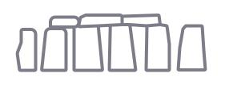
Bandwagon Effect（从众效应）
Ideas, fads, and beliefs grow as more people adopt them.
Example: Sally believes fidget spinners help her children. Francis does, too.
Tags: Social, Belief, Politics
Groupthink（群体迷思）
Due to a desire for conformity and harmony in the group, we make irrational decisions, often to minimize conflict.
Example: Sally wants to go get ice cream. Francis wants to shop for T-shirts. You suggest getting T-shirts with pictures of ice cream on them.
Tags: Social, Belief, Politics
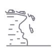
Halo Effect（光环效应）
If you see a person as having a positive trait, that positive trait impression will spill over into their other traits. (This also works for negative traits.)
Example: "Taylor could never be mean, she's so cute!"
Tags: Social, Belief, Politics
Moral Luck（道德运气）
Better moral standing happens due to a positive outcome; worse moral standing happens due to a negative outcome.
Example: "X culture won X war because they were morally superior to the losers."
Tags: Social, Belief, Politics, Memory
False Consensus（虚假共识效应）
We believe more people agree with us than is actually the case.
Example: "Everybody thinks that!"
Tags: Social, Belief, Politics
Curse of Knowledge（知识诅咒）
Once we know something, we assume everyone else knows it, too.
Example: Alice is a teacher and struggles to understand the perspective of her new students.
Tags: Social, Belief, Politics, Memory
Spotligh Effect（聚光灯效应）
We overestimate how much people are paying attention to our behavior and appearance.
Example: Sally is worried everyone's going to notice how lame her ice cream T-shirt is.
Tags: Social, Memory
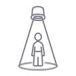
Availability Heuristic（可得性启发式）
We rely on immediate examples that come to mind while making judgments.
Example: When trying to decide on which store to visit, you choose the one you most recently saw an ad for.
Tags: Belief, Learning, Memory, Politics, Money
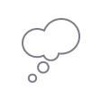
Defensive Attribution（防御性归因）
As a witness who secretly fears being vulnerable to a serious mishap, we will blame the victim less and attacker more if we relate to the victim
Example: Sally sat too long at a green light because she was playing with her phone. She got rear-ended. Greg, who is known to text and drive, got out and yelled at the person who smacked into her.
Tags: Social, Memory, Politics
Just-World Hypothesis（公正世界假说）
We tend to believe the world is just; therefore, we assume acts of injustice are deserved.
Example: "Sally's purse was stolen because she was mean to Francis about their T-shirt and had bad karma."
Tags: Social, Memory, Politics, Belief
Naive Realism（朴素实在论）
We believe that we observe objective reality and that other people are irrational, uninformed, or biased.
Example: "see the world as it really is — other people are dumb."
Tags: Social, Memory, Politics, Belief
Naive Cynicism（朴素犬儒主义）
We believe that we observe objective reality and that other people have a higher egocentric bias than they actually do in their intentions/actions.
Example: "The only reason this person is doing something nice is to get something out of me."
Tags: Social, Memory, Politics, Belief
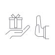
Forer Effect（福勒效应（巴纳姆效应））
Also known as: Barnum Effect
We easily attribute our personalities to vague statements, even if they can apply to a wide range of people
Example: "This horoscope is so accurate!"
Tags: Memory, Belief
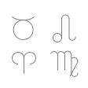
Dunning-Kruger Effect（达宁－克鲁格效应）
The less you know, the more confident you are. The more you know, the less confident you are.
Example: Francis confidently assures the group that there's no kelp in ice cream. They do not work in the dairy industry.
Tags: Social, Belief, Learning, Memory, Politics, Money
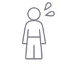
Anchoring（锚定效应）
We rely heavily on the first piece of information introduced when making decisions
Example: “That's 50% off? It must be a great deal.”
Tags: Learning, Belief, Memory, Money
Automation Bias（自动化偏差）
We rely on automated systems, sometimes trusting too much in the automated correction of actually correct decisions
Example: Your phone auto-corrects "its" to "it's," so you assume it's right.
Tags: Learning, Memory, Belief
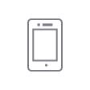
Google Effect（谷歌效应）
Also known as: Digital Amnesia
We tend to forget information that’s easily looked up in search engines.
Example: "What was the name of that actor in that funny movie? I've looked it up like eight times... ."
Tags: Learning, Memory, Belief
Reactance（心理抗拒）
We do the opposite of what we're told, especially when we perceive threats to personal freedoms.
Example: One of Alice's students refuses to do his homework, even though both she and his parents tell him to.
Tags: Social, Money, Politics
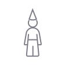
Confirmation Bias（确认偏差）
We tend to find and remember information that confirms our perceptions.
Example: You can confirm a conspiracy theory based on scant evidence while ignoring contrary evidence.
Tags: Learning, Memory, Belief, Politics
Backfire Effect（逆火效应）
Disproving evidence sometimes has the unwarranted effect of confirming our beliefs.
Example: The evidence that disproves your conspiracy theory was probably faked by the government.
Tags: Belief, Learning, Memory, Politics
Third-Person Effect（第三人效应）
We believe that others are more affected by mass media consumption than we ourselves are.
Example: "You've clearly been brainwashed by the media!"
Tags: Memory, Social, Learning, Belief, Politics
Belief Bias（信念偏差）
We judge an argument's strength not by how strongly it supports the conclusion but how plausible the conclusion is in our own minds.
Example: Sally mentions her supporting theory about your conspiracy theory, which you adopt wholeheartedly despite the fact that she has very litle evidence for it.
Tags: Belief, Learning, Memory, Politics
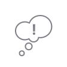
Availability Cascade（可得性级联）
Tied to our need for social acceptance, collective beliefs gain more plausibility through public repetition.
Example: A story about razor blades appearing in candy eventually led to many people no longer offering homemade treats on Halloween in America.
Tags: Memory, Social, Learning, Belief, Money, Politics
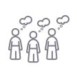
Declinism（衰退主义）
We tend to romanticize the past and view the future negatively, believing that societies/institutions are by and large in decline
Example: "In my day, kids had more respect!"
Tags: Memory, Social, Belief, Politics
Status Quo Bias（现状偏差）
We tend to prefer things to stay the same; changes from the baseline are considered to be a loss.
Example: Even though an app's terms of service invade Sally's privacy, she'd rather not switch to another app.
Tags: Memory, Social, Learning, Belief, Money, Politics
Sunk Cost Fallacy（沉没成本谬误）
Also known as: Escalation of Commitment
We invest more in things that have cost us something rather than altering our investments, even if we face negative outcomes.
Example: "In for a penny, in for a pound!"
Tags: Memory, Belief, Money
Gambler's Fallacy（赌徒谬误）
We think future possibilities are affected by past events.
Example: Alice has lost nine coin tosses in a row, so she's sure to win the next one!
Tags: Memory, Belief, Money
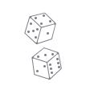
Zero-Risk Bias（零风险偏差）
We prefer to reduce small risks to zero, even if we can reduce more risk overall with another option.
Example: "You should probably buy the warranty."
Tags: Belief, Money, Politics
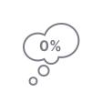
Framing Effect（框架效应）
We often draw different conclusions from the same information depending on how it's presented.
Example: Alice hears that her favorite candidate is "killing it" with a 45% approval rating. Sally hears that the candidate is "disappointing the country" with a 45% rating. They have wildly different interpretations of the same statistic.
Tags: Learning, Social, Belief, Money, Politics
Stereotyping（刻板印象）
We adopt generalized beliefs that members of a group will have certain characteristics, despite not having information about the individual.
Example: "That guy with the fancy mustache is a hipster. He probably has a vinyl collection."
Tags: Memory, Social, Learning, Belief, Politics
Outgroup Homogeneity Bias（外群体同质性偏差）
We perceive out-group members as homogeneous and our own in-groups as more diverse.
Example: Alice is not a gamer, but she believes "all gamers are the same."
Tags: Memory, Social, Learning, Belief, Money, Politics
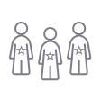
Authority Bias（权威偏差）
We trust and are more often influenced by the opinions of authority figures.
Example: "My teacher told me this was fine."
Tags: Social, Belief, Money, Politics
Placebo Effect（安慰剂效应）
If we believe a treatment will work, it often will have a small physiological effect.
Example: Alice was given a placebo for her pain, and her pain decreased.
Tags: Memory, Belief, Money
Survivorship Bias（幸存者偏差）
We tend to focus on those things that survived a process and overlook ones that failed
Example: Greg tells Alice her purse business is going to be great because a successful fashion company had the same strategy. (But 10 other failed companies also had the same strategy.)
Tags: Social, Belief, Money, Politics
Tachypsychia（时间知觉扭曲）
Our perceptions of time shift depending on trauma, drug use, and physical exertion.
Example: "When the car almost hit me, time slowed down ... ."
Tags: Memory, Learning, Belief
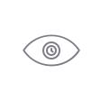
Law of Triviality（琐碎定律）
Also known as: Bike-Shedding
We give disproportionate weight to trivial issues, often while avoiding more complex issues
Example: Rather than figuring out how to help the homeless, a local city government spends a lot of time discussing putting in a bike path and bike sheds.
Tags: Memory, Social, Money, Politics
Zeigarnik Effect（蔡格尼克效应）
We remember incomplete tasks more than completed ones.
Example: Greg feels guilty for never getting anything done, until he sees all of the tasks he's checked off on his task list.
Tags: Memory, Belief
IKEA Effect（宜家效应）
We place higher value on things we partially created ourselves.
Example: "Don't you love this pot I spent $20 on? I painted it myself!"
Tags: Social, Belief, Money
Ben Franklin Effect（本杰明·富兰克林效应）
We like doing favors; we are more likely to do another favor for someone if we've already done a favor for them than if we had received a favor from that person.
Example: Greg loaned Francis a pen. When Francis asked to borrow $5, Greg did it readily.
Tags: Social, Belief, Money, Politics
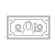
Bystander Effect（旁观者效应）
The more other people are around, the less likely we are to help a victim.
Example: In a crowd of students, no one called 911 when someone got hurt in a fight.
Tags: Social, Money
Suggestibility（易受暗示性）
We, especially children, sometimes mistake ideas suggested by a questioner for memories.
Example: "So did you fall off the couch before or after your mom hit you?"
Tags: Memory, Social, Learning, Belief
False Memory（虚假记忆）
We mistake imagination for real memories.
Example: Greg is certain Sally said a really funny joke about pineapples, when that joke actually came from a TV show.
Tags: Memory, Social, Belief
Cryptomnesia（隐匿记忆）
We mistake real memories for imagination.
Example: Greg thinks he visited a graveyard, but he's pretty sure he just had a spooky dream.
Tags: Memory, Social, Belief
Clustering Illusion（聚类错觉）
We find patterns and "clusters" in random data.
Example: "That cloud looks like your cat, Alice!"
Tags: Memory, Belief
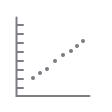
Pressimism Bias（悲观偏差）
We sometimes overestimate the likelihood of bad outcomes.
Example: "Nothing will ever get better."
Tags: Memory, Belief
Optimism Bias（乐观偏差）
We sometimes are over-optimisitc about good outcomes.
Example: "It's going to turn out great!"
Tags: Memory, Belief

Blind Spot Bias（偏差盲点）
We don't think we have bias, and we see it in others more than ourselves.
Example: "I am not biased!"
Tags: Memory, Social, Learning, Belief
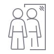